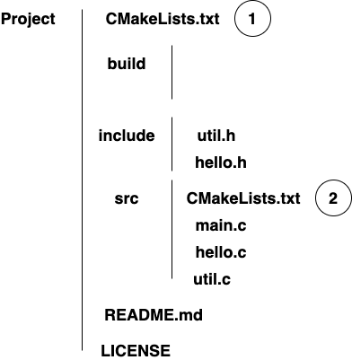
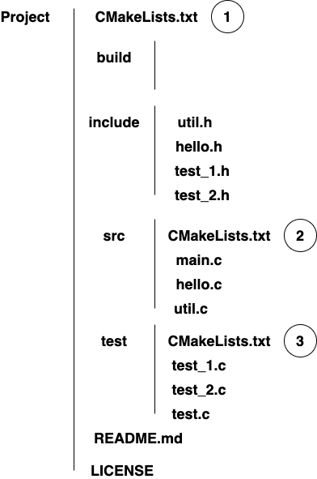

// hello.h #ifndef HELLO_H #define HELLO_H char * hello(); #endif
// util.h #ifndef UTIL_H #define UTIL_H int doubleNum(int); #endif
// hello.c
#include "hello.h"
char * hello()
{
return "Hello World!\n";
}
// util.c
#include "util.h"
int doubleNum(int n)
{
return 2*n;
}
// main.c
#include <stdio.h>
#include "hello.h"
#include "util.h"
int main()
{
printf("%s\n", hello());
printf("%d\n", doubleNum(10));
return 0;
}
# CMakeLists.txt 1
cmake_minimum_required(VERSION 2.6)
project(Test)
set(LIBRARY_OUTPUT_PATH ${PROJECT_SOURCE_DIR}/build/lib)
set(EXECUTABLE_OUTPUT_PATH ${PROJECT_SOURCE_DIR}/build/bin)
include_directories(${PROJECT_SOURCE_DIR}/include /usr/include)
link_directories(${PROJECT_SOURCE_DIR}/build/lib)
add_subdirectory(src)
file(COPY ${PROJECT_SOURCE_DIR}/README.md DESTINATION ${CMAKE_INSTALL_PREFIX})
file(COPY ${PROJECT_SOURCE_DIR}/LICENSE DESTINATION ${CMAKE_INSTALL_PREFIX})
enable_testing()
# CMakeLists.txt 2
set(CMAKE_MACOSX_RPATH 1)
add_library(hello_shared SHARED hello.c util.c)
add_executable(Hello main.c)
target_link_libraries(Hello hello_shared)
add_test(NAME test_Hello COMMAND Hello)
INSTALL(TARGETS Hello
RUNTIME DESTINATION bin)
INSTALL(TARGETS hello_shared
LIBRARY DESTINATION lib)
INSTALL(DIRECTORY ${PROJECT_SOURCE_DIR}/include/ DESTINATION include)
enable_testing()
// add LD_LIBRARY_PATH to .bashrc or .bash_profile export LD_LIBRARY_PATH="$HOME/.local/lib:$LD_LIBRARY_PAH"
cd build cmake -DCMAKE_INSTALL_PREFIX=$HOME/.local .. make make test make install xargs rm < install_manifest.txt, uninstall
// install CUnit sudo apt-get install libcunit1 libcunit1-doc libcunit1-dev

// test_1.h #ifndef TEST_1_H #define TEST_1_H void test_hello(); #endif
// test_2.h #ifndef TEST_2_H #define TEST_2_H void test_doubleNum(); #endif
// test_1.c
#include <stdio.h>
#include <string.h>
#include <CUnit/CUnit.h>
#include "hello.h"
void test_hello()
{
CU_ASSERT(strcmp(hello(), "Hello World\n") == 0);
}
// test_2.c
#include <stdio.h>
#include <CUnit/CUnit.h>
#include "util.h"
void test_doubleNum()
{
CU_ASSERT(doubleNum(10) == 20);
CU_ASSERT(doubleNum(0) == 0);
CU_ASSERT(doubleNum(-1) == -2);
}
// test.c
#include <stdio.h>
#include <string.h>
#include <CUnit/CUnit.h>
#include "CUnit/Basic.h"
#include "CUnit/Automated.h"
#include "hello.h"
#include "util.h"
#include "test_1.h"
#include "test_2.h"
int suitInit() {return 0;}
int suitClean() {return 0;}
int main()
{
// initialize registry
if (CUE_SUCCESS != CU_initialize_registry())
return CU_get_error();
// add a suit to the registry
CU_pSuite pSuite = NULL;
pSuite = CU_add_suite("Suite_1", suitInit, suitClean);
if (NULL == pSuite) {
CU_cleanup_registry();
return CU_get_error();
}
// add tests to the suit
if ((NULL == CU_add_test(pSuite, "test of hello()", test_hello)) ||
(NULL == CU_add_test(pSuite, "test of hello()", test_doubleNum)))
{
CU_cleanup_registry();
return CU_get_error();
}
// run all tests using the CUnit Basic interface, output report to stdout
CU_basic_set_mode(CU_BRM_VERBOSE);
CU_basic_run_tests();
// run all tests using the automated interface, output report to xml files
CU_automated_run_tests();
CU_list_tests_to_file();
// clean registry
CU_cleanup_registry();
return CU_get_error();
}
# CMakeLists.txt 1
cmake_minimum_required(VERSION 2.6)
project(Test)
set(LIBRARY_OUTPUT_PATH ${PROJECT_SOURCE_DIR}/build/lib)
set(EXECUTABLE_OUTPUT_PATH ${PROJECT_SOURCE_DIR}/build/bin)
include_directories(${PROJECT_SOURCE_DIR}/include /usr/include)
link_directories(${PROJECT_SOURCE_DIR}/build/lib)
add_subdirectory(src)
add_subdirectory(test)
file(COPY ${PROJECT_SOURCE_DIR}/README.md DESTINATION ${CMAKE_INSTALL_PREFIX})
file(COPY ${PROJECT_SOURCE_DIR}/LICENSE DESTINATION ${CMAKE_INSTALL_PREFIX})
enable_testing()
# CMakeLists.txt 2
set(CMAKE_MACOSX_RPATH 1)
add_library(hello_shared SHARED hello.c util.c)
add_executable(Hello main.c)
target_link_libraries(Hello hello_shared)
add_test(NAME test_Hello COMMAND Hello)
INSTALL(TARGETS Hello
RUNTIME DESTINATION bin)
INSTALL(TARGETS hello_shared
LIBRARY DESTINATION lib)
INSTALL(DIRECTORY ${PROJECT_SOURCE_DIR}/include/ DESTINATION include)
enable_testing()
# CMakeLists.txt 3
file(GLOB_RECURSE c_files *.c)
add_executable(my_unit_test ${c_files})
find_library(TEST_LIBRARY cunit HINTS /usr/local/lib)
message("Test: " ${TEST_LIBRARY})
target_link_libraries(my_unit_test ${TEST_LIBRARY} hello_shared)
add_test(NAME test_unit_test COMMAND my_unit_test)
INSTALL(TARGETS my_unit_test
RUNTIME DESTINATION bin)
enable_testing()
cd build cmake -DCMAKE_INSTALL_PREFIX=$HOME/.local .. make make test bin/my_unit_test make install xargs rm < install_manifest.txt, uninstall